Little Sweetie
Cold brew, maple syrup + milk.
$5 · 16 ozEspresso, cold brew and our famous Little Sweetie, poured from a remodeled 1952 Spartan trailer on the corner of Holton & Tillery. Big covered patio, breakfast tacos next door, pups and kids welcome.
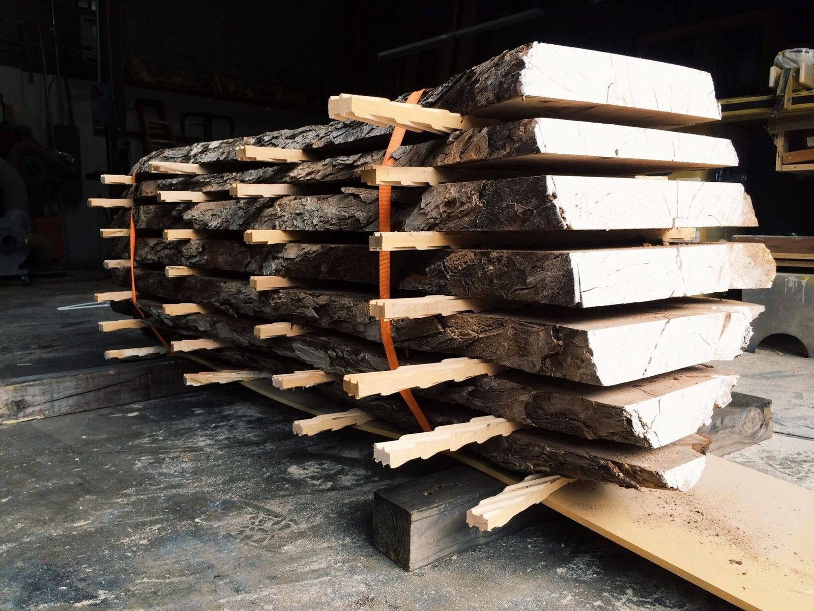
flitch /flich/ · noun
a slab of wood cut from a log.
That’s where the name comes from. Our trailer shares a lot with Harvest Lumber Company, a working sawmill and lumber warehouse. So yes, the logo is a sliced log, and yes, there’s a real sawmill next door.
the regulars
Hot or iced, 12 or 16 oz. Coffee from Onyx, Creature and other roasters we love, teas from Zhi.
Cold brew, maple syrup + milk.
$5 · 16 oz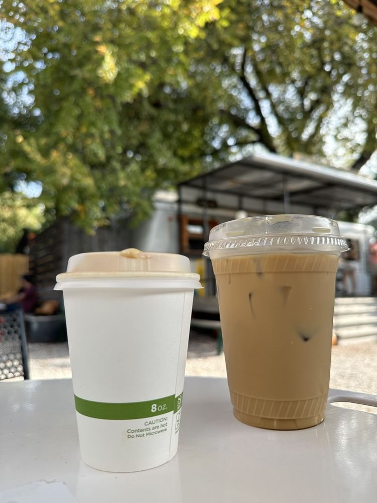
Espresso, maple syrup + milk. Hot or iced, with oat milk if you like.
$5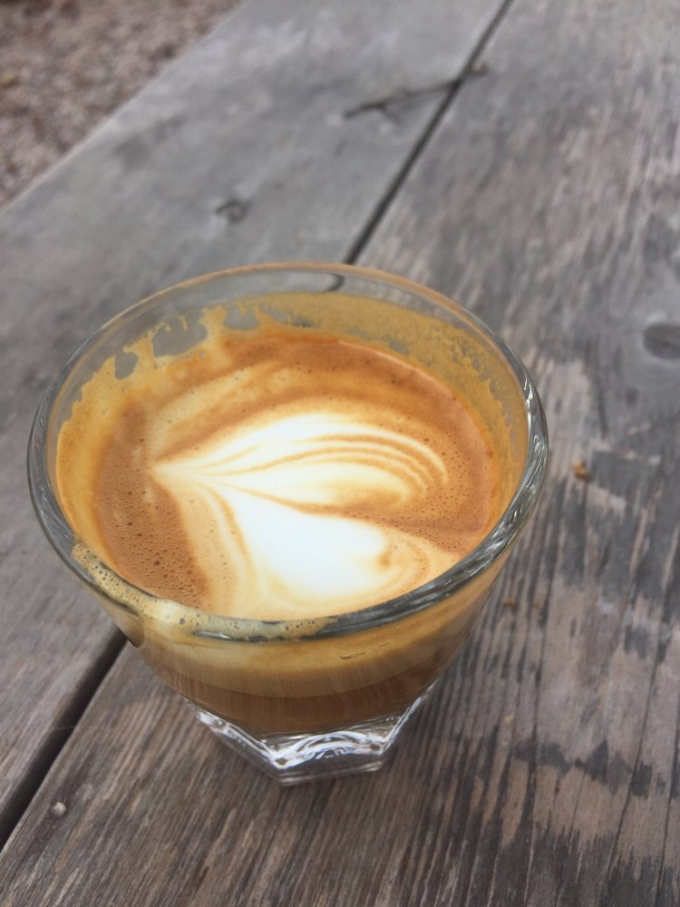
Espresso + 2 oz steamed milk.
$3.75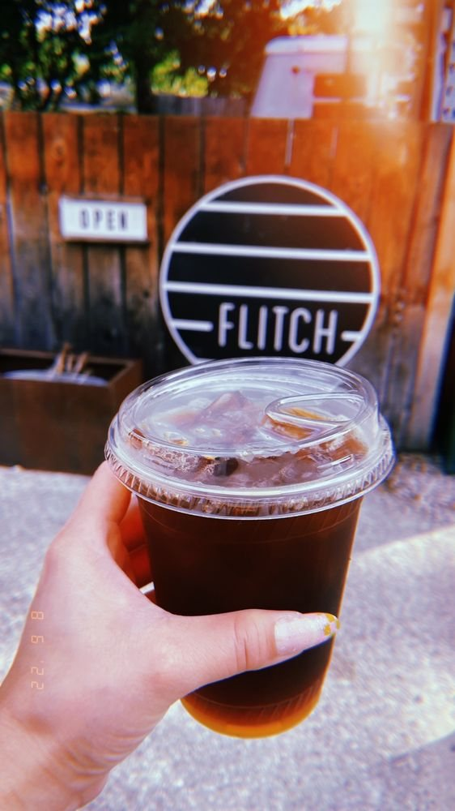
Our house cold brew, made with Onyx Coffee beans.
$4 / $4.50on the board right now
Our seasonal greatest hits are back for autumn in Texas:
Specials rotate with the seasons (summer brings things like a Lavender Lemon Espresso Tonic and Peach Sparkling Matcha). Follow @flitchcoffee to catch each drop.
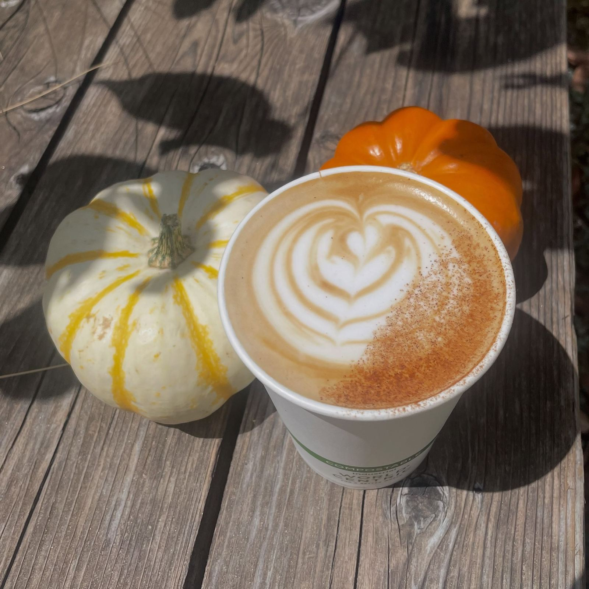
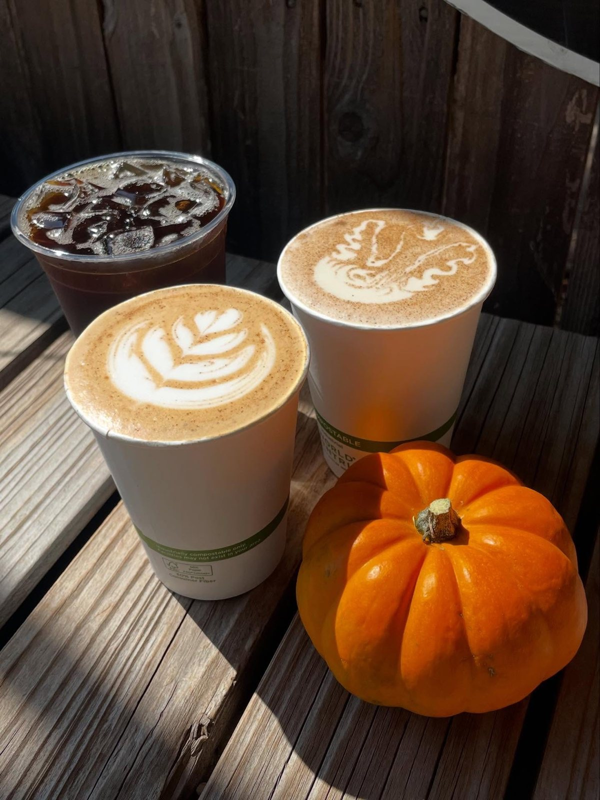
the patio
No walls, lots of shade. Come for a quick cortado, stay for the morning.
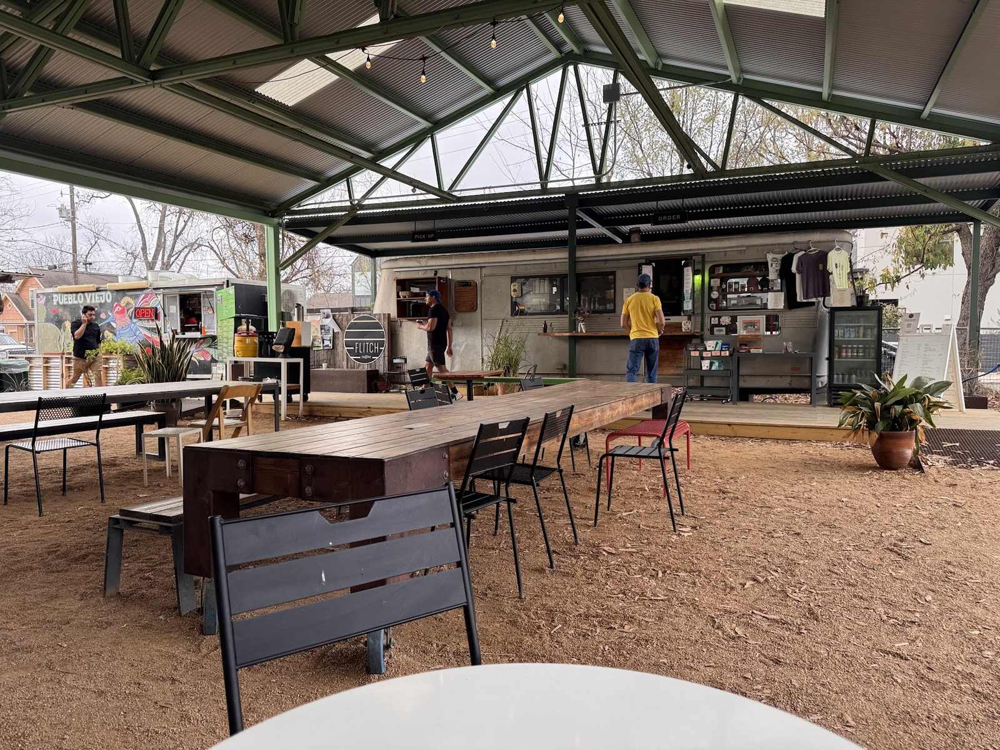
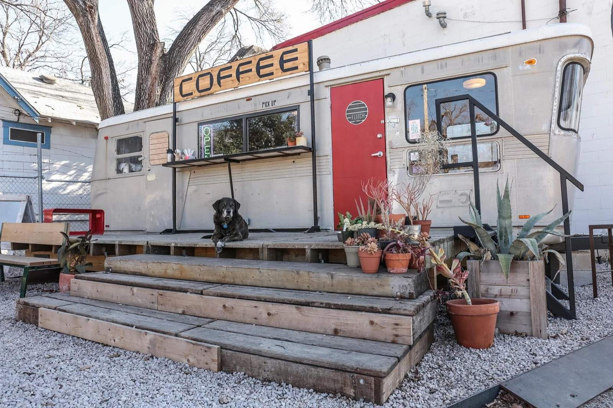
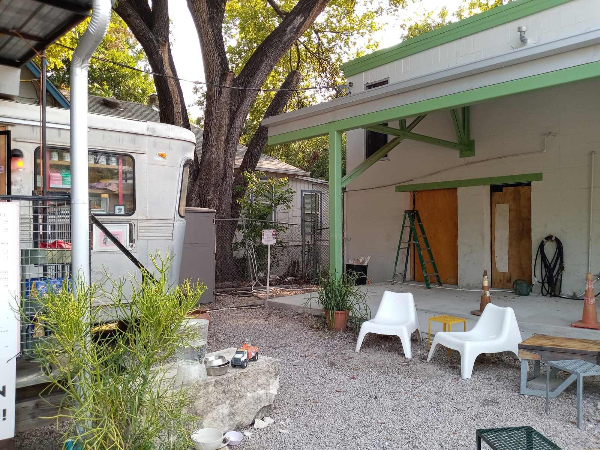
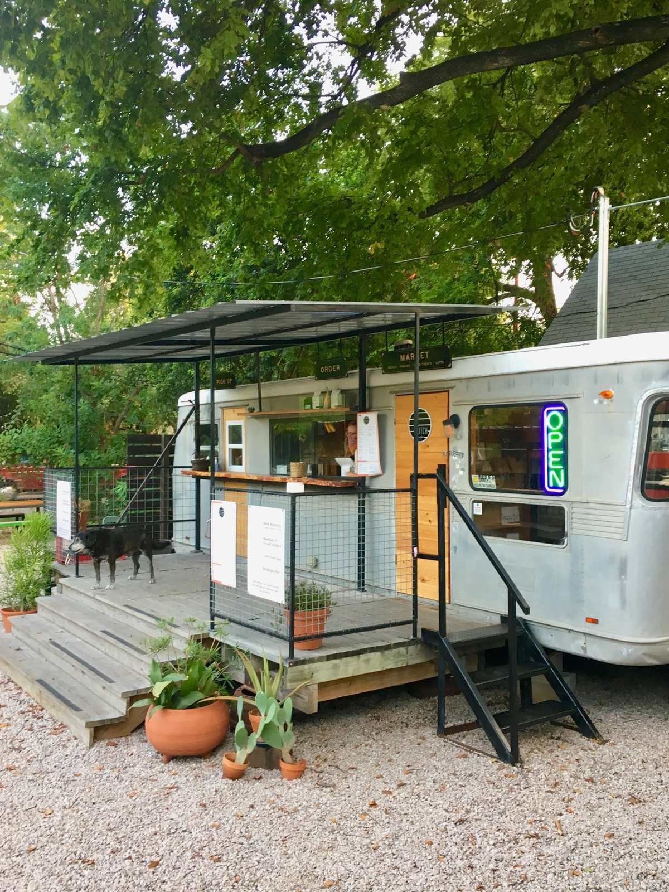
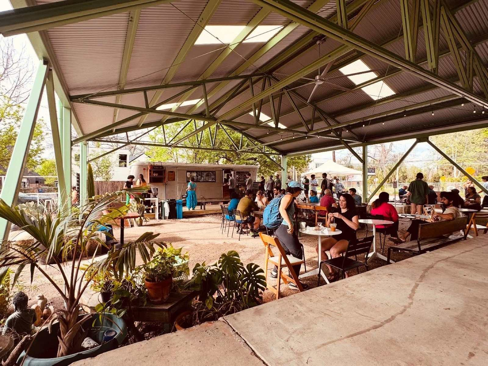
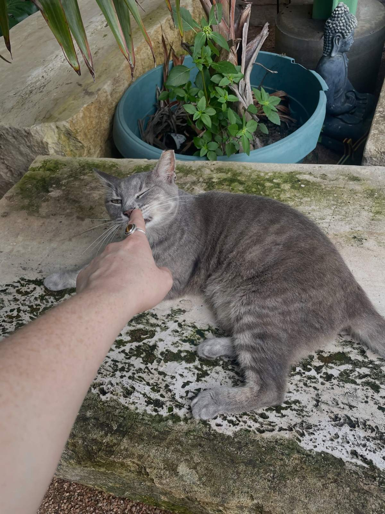
staff pick
If you’ve been around, you know she runs this place. After a tumor surgery this year (thank you to everyone who chipped in!), she’s back, cancer-free and accepting pets. Tell her she’s a trooper.
word on the patio
“This is my favorite coffee shop because of the coffee and ambiance. Plenty of seating (in the shade). … I go here at least once a week, I feel like Flitch is one of the very few shops in Austin that knows how to make a delicious cortado.”
“I have officially become obsessed with the little sweetie on the menu. I don't even like cold brew that much and this is an all-time favorite cold brew in Austin. The vibe of the patio is amazing too.”
“The coffee here is outstanding, but the customer service here is even better! Everyone that works there knows what the people need. I love starting my day with good coffee, kind people, and getting some fresh air underneath the massive covered outdoor space.”
“Flitch has easily become one of our favorite coffee spots on the east side. The line/wait is never long, the coffee is always consistently good and everyone is very nice.”
“Really nice coffee in a convenient location. … they provide a good amount of covered and uncovered seating as well. The space is dog and children friendly. Complimentary water is available and the drinks come out quick. No complaints.”
“Cute little spot and you can bring your dogs too! Great coffee and yummy breakfast tacos with quick service and a very chill outdoor vibe.”
“This is a cute outdoor coffee patio that offers a variety of drinks from their menu. I order an iced maple latte with oat milk and was pleasantly surprised by the taste! I would order again.”
“Good cold brew and good vibes. Lively on Saturdays and some chill dogs hanging out. Also good options for shade.”
“Laid back atmosphere, delicious coffee, and friendly people behind the counter. Every time I come to Flitch, there's never any wait and I just love how cozy it is.”
more than coffee
The lot doubles as a little neighborhood stage.
come by
| Monday | 7:00 am – 3:00 pm |
| Tuesday | 7:00 am – 3:00 pm |
| Wednesday | 7:00 am – 3:00 pm |
| Thursday | 7:00 am – 3:00 pm |
| Friday | 7:00 am – 3:00 pm |
| Saturday | 7:00 am – 3:00 pm |
| Sunday | 7:00 am – 3:00 pm |
quick answers
We're at 641 Tillery St, Suite 110, Austin, TX 78702, on the corner of Holton & Tillery in East Austin. We share the lot with Harvest Lumber Company and the Pueblo Viejo taco truck.
We're open every day from 7am to 3pm. If weather or a holiday changes things, we post it on Instagram first. See hours & directions.
Very. Flitch is people-friendly, pup-friendly and kid-friendly. The whole shop is outdoors, so bring your dog and grab a seat in the shade. Good to know before you visit.
No, everything is outdoors, but there's a big covered patio plus plenty of shaded seating under the trees, so it stays comfortable most of the year.
Yes. Ready-made Pueblo Viejo breakfast tacos (potato, bean & cheese; bacon, egg & cheese; migas) are at our window from 7am until they sell out, and the Pueblo Viejo truck is parked right on the lot. See the food menu.
Our house favorite: cold brew, maple syrup and milk (16 oz, $5). You can also order it by the gallon for the office. See coffee catering.
Yes: oat, almond and soy (plus whole and 1%). Alternative milks are +$.50 / $1. Our Golden Milk is made with oat milk. Full menu.
Yes to both. Gallons of cold brew, Little Sweetie, iced tea and hot coffee carafes can be ordered for pickup on our catering page, and you can tell us about your event on the events page.
Open every day, 7am–3pm · 641 Tillery St